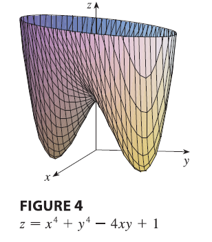

We need to be able to determine whether or not a function has an
extreme value at a critical point. The following test, which is proved
at the end of this section, is analogous to the Second Derivative Test
for functions of one variable.
Second Derivatives Test Suppose the second partial
derivatives of \(f\) are continuous on
a disk with center \((a, b)\), and
suppose that \(f_x(a, b) = 0\) and
\(f_y(a, b) = 0\) [that is, \((a, b)\) is a critical point of \(f\)]. Let \[
D = D(a, b) = f_{xx}(a, b)f_{yy}(a, b) - [f_{xy}(a, b)]^2
\] (a) If \(D > 0\) and \(f_{xx}(a, b) > 0\), then \(f(a, b)\) is a local minimum. (b) If \(D > 0\) and \(f_{xx}(a, b) < 0\), then \(f(a, b)\) is a local maximum. (c) If \(D < 0\), then \(f(a, b)\) is not a local maximum or
minimum.
NOTE 1 In case (c) the point \((a, b)\) is called a saddle
point of \(f\) and the graph
of \(f\) crosses its tangent plane at
\((a, b)\). NOTE 2 If
\(D = 0\), the test gives no
information: \(f\) could have a local
maximum or local minimum at \((a, b)\),
or \((a, b)\) could be a saddle point
of \(f\). NOTE 3 To
remember the formula for \(D\), it’s
helpful to write it as a determinant: \[
D = \begin{vmatrix} f_{xx} & f_{xy} \\ f_{yx} & f_{yy}
\end{vmatrix} = f_{xx}f_{yy} - (f_{xy})^2
\]
EXAMPLE Find the local maximum and minimum values
and saddle points of \(f(x, y) = x^4 + y^4 -
4xy + 1\).
SOLUTION We first locate the critical points: \[
f_x = 4x^3 - 4y \quad f_y = 4y^3 - 4x
\] Setting these partial derivatives equal to 0, we obtain the
equations \[
x^3 - y = 0 \quad \text{and} \quad y^3 - x = 0
\] To solve these equations we substitute \(y = x^3\) from the first equation into the
second one. This gives \[
0 = x^9 - x = x(x^8 - 1) = x(x^4 - 1)(x^4 + 1) = x(x^2 - 1)(x^2 + 1)(x^4
+ 1)
\] so there are three real roots: \(x =
0, 1, -1\). The three critical points are \((0, 0)\), \((1,
1)\), and \((-1, -1)\).
Next we calculate the second partial derivatives and \(D(x, y)\): \[
f_{xx} = 12x^2 \quad f_{xy} = -4 \quad f_{yy} = 12y^2
\]\[
D(x, y) = f_{xx}f_{yy} - (f_{xy})^2 = 144x^2y^2 - 16
\] Since \(D(0, 0) = -16 <
0\), it follows from case (c) of the Second Derivatives Test that
the origin is a saddle point; that is, \(f\) has no local maximum or minimum at
\((0, 0)\). Since \(D(1, 1) = 128 > 0\) and \(f_{xx}(1, 1) = 12 > 0\), we see from
case (a) of the test that \(f(1, 1) =
-1\) is a local minimum. Similarly, we have \(D(-1, -1) = 128 > 0\) and \(f_{xx}(-1, -1) = 12 > 0\), so \(f(-1, -1) = -1\) is also a local minimum.
The graph of \(f\) is shown in this
Figure.

EXAMPLE Find and classify the critical points of the
function \[
f(x, y) = 10x^2y - 5x^2 - 4y^2 - x^4 - 2y^4
\] Also find the highest point on the graph of \(f\).
SOLUTION The first-order partial derivatives are
\[
f_x = 20xy - 10x - 4x^3 \quad f_y = 10x^2 - 8y - 8y^3
\] So to find the critical points we need to solve the equations
\[
2x(10y - 5 - 2x^2) = 0
\]\[
5x^2 - 4y - 4y^3 = 0
\] From the first equation we see that either \[
x = 0 \quad \text{or} \quad 10y - 5 - 2x^2 = 0
\] In the first case (\(x =
0\)), the second equation becomes \(-4y(1 + y^2) = 0\), so \(y = 0\) and we have the critical point
\((0, 0)\).
In the second case (\(10y - 5 - 2x^2 =
0\)), we get \[
x^2 = 5y - 2.5
\] and, putting this in the second equation, we have \(25y - 12.5 - 4y - 4y^3 = 0\). So we have to
solve the cubic equation \[
4y^3 - 21y + 12.5 = 0
\] Using a graphing calculator or computer to graph the function
\[
g(y) = 4y^3 - 21y + 12.5
\] as in Figure 6, we see that the equation has three real roots.
By zooming in, we can find the roots to four decimal places: \[
y \approx -2.5452 \quad y \approx 0.6468 \quad y \approx 1.8984
\] From \(x^2 = 5y - 2.5\), the
corresponding \(x\)-values are given by
\[
x = \pm\sqrt{5y - 2.5}
\] If \(y \approx -2.5452\),
then \(x\) has no corresponding real
values. If \(y \approx 0.6468\), then
\(x \approx \pm 0.8567\). If \(y \approx 1.8984\), then \(x \approx \pm 2.6442\). So we have a total
of five critical points, which are analyzed in the following chart. All
quantities are rounded to two decimal places.